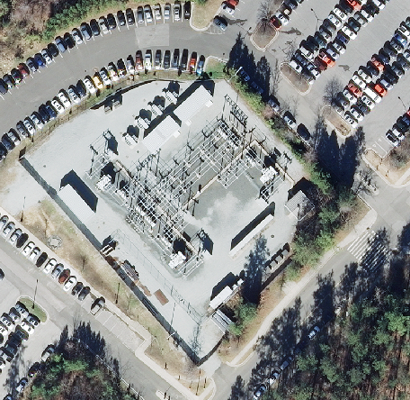
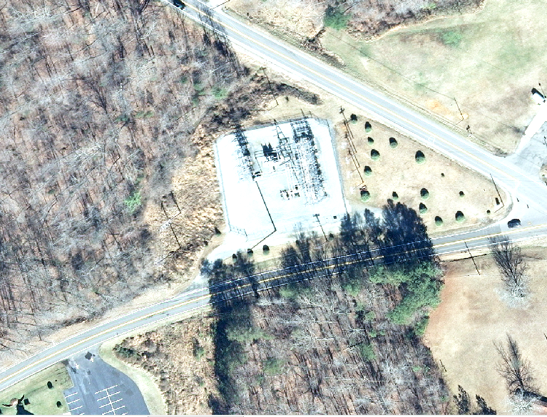

Identification
What does a substation look like?
Substations are an important part of the power grid.
They step voltages up or down to the appropriate
level and also act as switching stations. Some tips
for spotting substations are:
-
Look for closed-off areas with metal lattice structures inside.
-
Look for power lines connecting to the complex.
Examples

Note that there are no power lines connecting to
this substation. The area is fenced off and
consists of small structures supporting a
network of wires. Substations generally look
very similar to this.

While the substation in this image is not as
easy to see, it is still easily identifiable.
Again, the area is fenced off. The wire network
in the substation is visible (barely). Note
the transmission lines connecting to the
substation from the left (the lines travel up
from the bottom of the image between the trees
and the parking lot) as well as the distribution
wires connecting on the right (these are
indicated by the four shadows of power line
poles just to the right of the substation).
Frequently Asked Questions
- What parts of a substation should be annotated?
Please draw a polygon around the whole complex.
This includes the empty space enclosed within the
outer fence, but not connecting power lines.